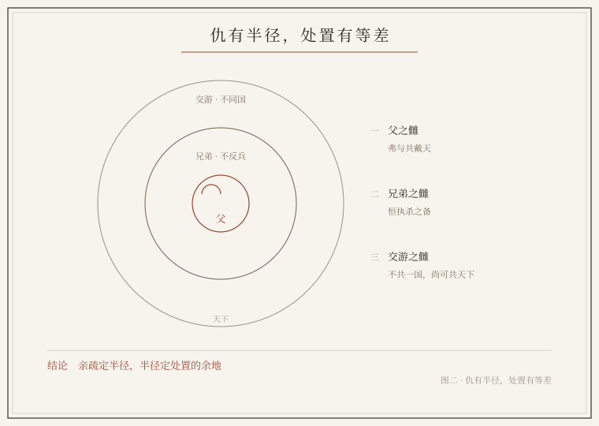

曲礼上 · 一·一百零八 · 第 106 课
三种仇，三种处置：父仇不共戴天，兄弟之仇不返家取兵，交游之仇不同国。
说什么事：父之雠，弗与共戴天。兄弟之雠不反兵。交游之雠不同国。
落在哪一层：礼意，兼及制。讲的是「仇」的等差。
为何编在此位：上节言军行之仪，此节言复雠之法。军与仇，一公一私，而同在血气。
【经】父之讎，弗與共戴天。兄弟之讎不反兵。交遊之讎不同國。
【注】父者子之天，殺己之天，與共戴天，非孝子也。行求殺之，乃止。恒執殺之備。讎不吾辟，則殺之。交遊，或為「朋友」。
戴天 注「父者子之天」。疏「天在上，故曰戴」；「不可与共处于天下」。
不反兵 注「恒执杀之备」。疏「若行逢仇，身不带兵，方反家取之，比来则仇已逃辟，终不可得，故恒带兵，见即杀之」。
不同国 注「仇不吾辟，则杀之」。疏「谓不共五等一国之中」。
交游 注「或为朋友」。疏「交游，朋友也，为朋友亦报仇也」。
《调人》之说 疏引「父之仇辟诸海外」「兄弟之仇辟诸千里之外」，谓逢赦宥王法者。
《檀弓》之说 疏引父母之仇「寝苫枕干，不仕，弗与共天下也。遇诸市朝，不反兵而斗」。
对父亲的仇人，不与他同顶一片天。对兄弟的仇人，不返回家去取兵器（随身带着，见了就动手）。对朋友的仇人，不与他同处一国。
一节三句，讲的是仇的半径：父仇无界，兄弟之仇以「兵不离身」为界，朋友之仇以「不同国」为界。亲疏不同，故处置的紧迫与余地不同。这不是鼓励私斗，是把一种极难约束的情绪，安置进有等差的框架里。
第一层 父者子之天 注一语定其分量。不是「很亲」，是「天」。天不可共，故仇不可共。
第二层 不反兵 注「恒执杀之备」。此处最见古人思虑之细：不是不许报，是不许因取兵而失其时。
第三层 不同国 朋友之仇，退一格：不共一国，尚可共天下。亲疏之别，在这里变成空间的远近。
第四层 与王法的张力 疏两引《调人》，皆以「遇赦宥」为说。礼许其心，法限其行，二者并存而不相掩。
与今日何干 今日不许私相复仇，一应由法。但「父之仇」三字所写的，是人心最难平的那一处；读此节，当读其难，不当读其许。
| 左 | 右 |
|---|---|
| 父之雠 | 父者子之天，不共戴天 |
| 弗与共戴天 | 行求杀之，乃止 |
| 兄弟之雠 | 恒执杀之备 |
| 不反兵 | 不带兵而反家取，则失其时 |
| 交游之雠 | 朋友之仇，亦为之报 |
| 不同国 | 不共一国，尚可共天下 |
画三圈同心界域，由内到外：最内一圈极小，圈内只有一处空白、圈线断开一道缺口；中圈稍大，圈上横着一支短兵器的剪影，刃朝外；最外圈最大、线最淡，圈内分立两个小点，各在一边相距很远。三圈之间不写文字、不画人。赭色只用在最内圈那道缺口上。
